图集 · GALLERY
三十张图，三段做东西的现场
一套兵棋、一个招标数据分析项目、一部程序生成的宣传片。图都是从自己项目里直接导出的，没有图库素材；点任意一张放大，用上面的筛子可以只看一类。
兵棋截图 12 张
看兵棋作品《最后的狼踪》是我做的一套不对称战术兵棋：狼群潜入牧场、猎杀牲畜、带战果撤离，牧民守畜、封堵洞口。截图来自本地网页原型和 AI 对战平台，棋盘是 16×28 的六边形地图。
 对局平台主界面：对战、观战与资料 AI 对战平台 · 本地服务
对局平台主界面：对战、观战与资料 AI 对战平台 · 本地服务
 开局部署：买犬、挖洞、摆算子 准备阶段 · 牧民反制部署
开局部署：买犬、挖洞、摆算子 准备阶段 · 牧民反制部署
 整张战场：牧场、林地与羊群 16×28 格 · 12 回合
整张战场：牧场、林地与羊群 16×28 格 · 12 回合
 棋盘特写：牧、田、德与羊群 算子与牲畜标记
棋盘特写：牧、田、德与羊群 算子与牲畜标记
 攻击预演：先算战斗比，再掷 D6 第 1 回合 · 狼群攻击阶段
攻击预演：先算战斗比，再掷 D6 第 1 回合 · 狼群攻击阶段
 观战回放：右侧写清每一步的理由 种子 910370 · 366 步 · 狼群大胜
观战回放：右侧写清每一步的理由 种子 910370 · 366 步 · 狼群大胜
 剧本编译器：画地形、涂区域、导出 JSON 棋盘 16×28 · 12 回合
剧本编译器：画地形、涂区域、导出 JSON 棋盘 16×28 · 12 回合
 Bot 教练台：改数值、写留言、交给 AI AI 对战平台 · 教练台
Bot 教练台：改数值、写留言、交给 AI AI 对战平台 · 教练台
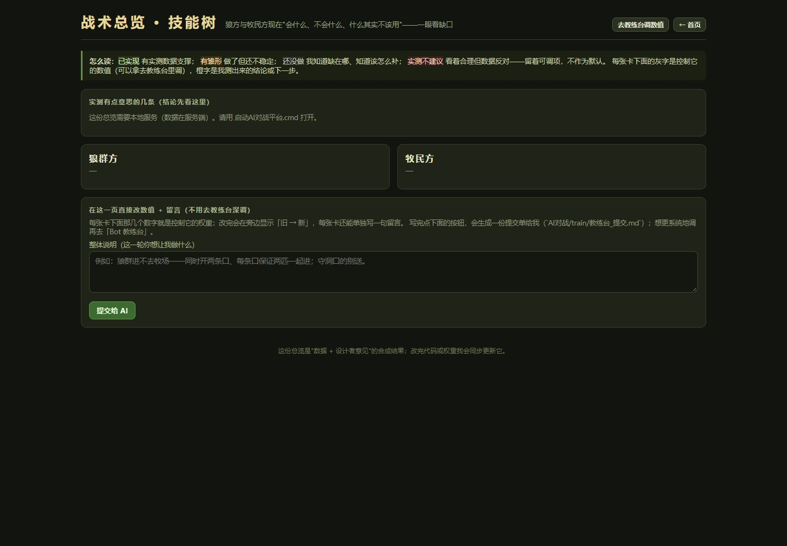
战术总览 · 技能树：两边现在会什么 AI 对战平台 · 战术总览 在线大厅：开房间与快速匹配 本地联机 · 房间管理
在线大厅：开房间与快速匹配 本地联机 · 房间管理
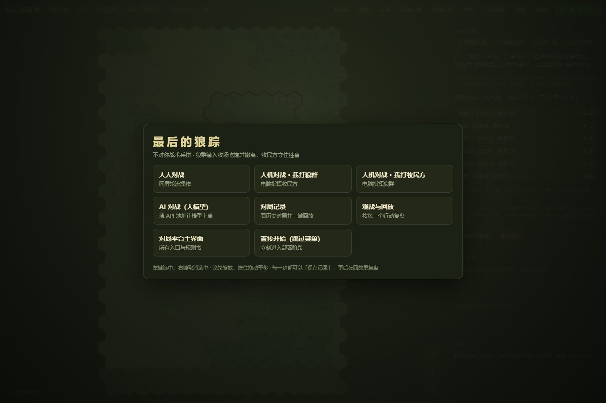
开局菜单：八个入口都在这里 人人 / 人机 / AI 对战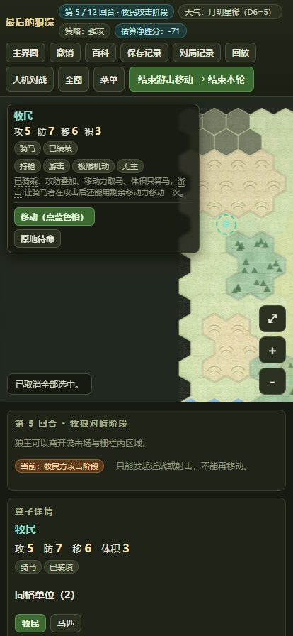
手机竖屏下的对局界面 第 5 回合 · 牧民攻击阶段数据图表 12 张
看数据作品医院招标投标数据采集与分析的产物：27 家医院官网、10709 条公告、9579 个详情页正文。图表由 analyze.py 分析脚本直接输出，包括分布、回归、分类、聚类和 SARIMA 外推。
 招标公告数量的年度趋势 图 2 · 2015–2026
招标公告数量的年度趋势 图 2 · 2015–2026
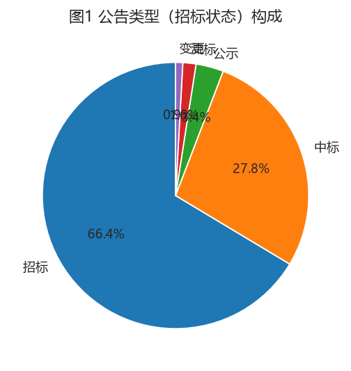
公告类型（招标状态）构成 图 1 · 招标占 66.4% 各医院采集到的公告数量 图 4 · 27 家官网
各医院采集到的公告数量 图 4 · 27 家官网
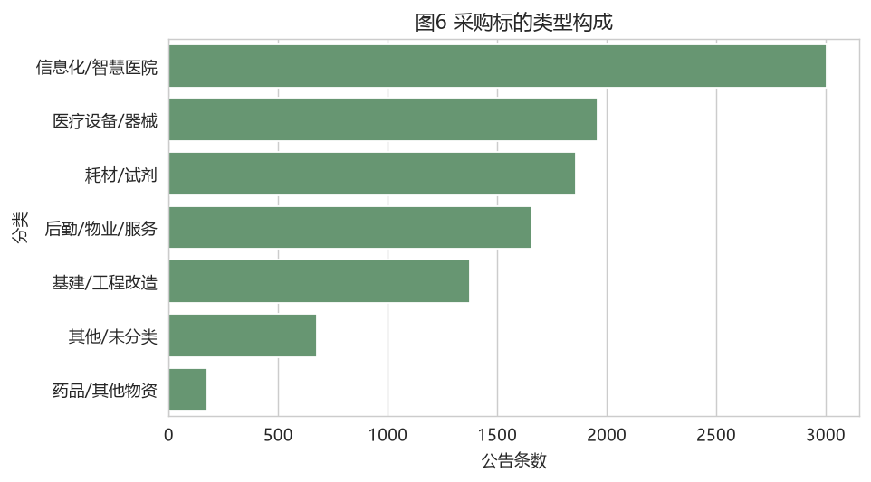
采购标的类型构成 图 6 · 七类标的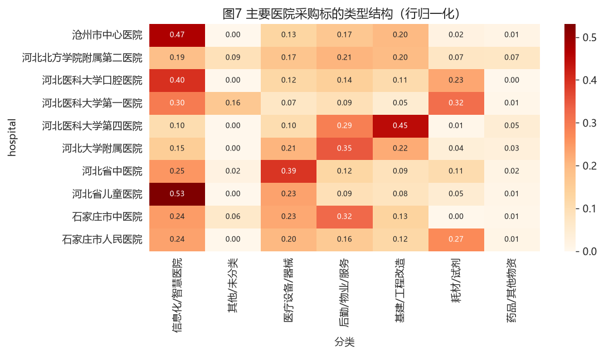
主要医院 × 标的类型结构（行归一化） 图 7 · 热力图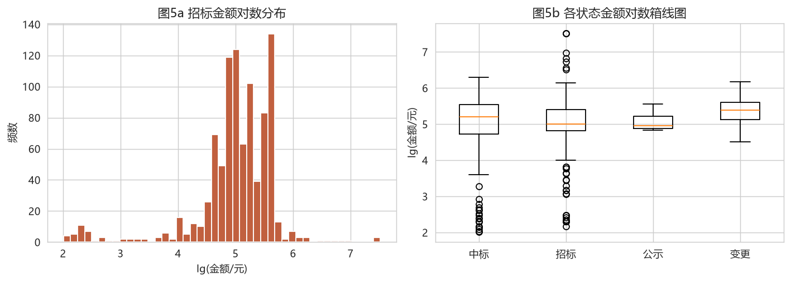
招标金额的对数分布与各状态箱线图 图 5a / 5b · 金额分布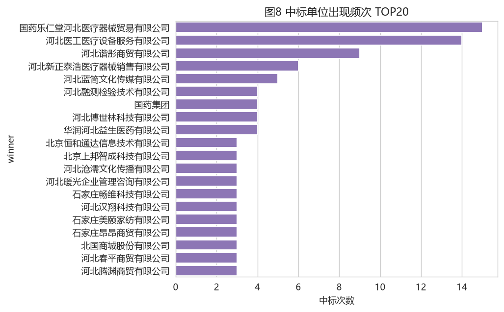
中标单位出现频次 TOP 20 图 8 · 供应集中度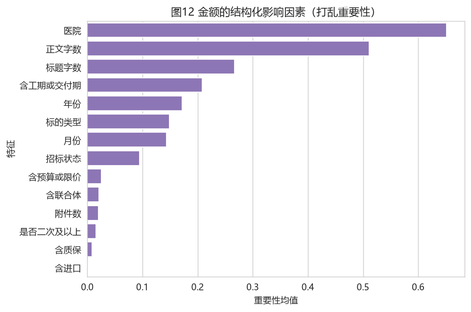
金额的结构化影响因素（打乱重要性） 图 12 · 特征重要性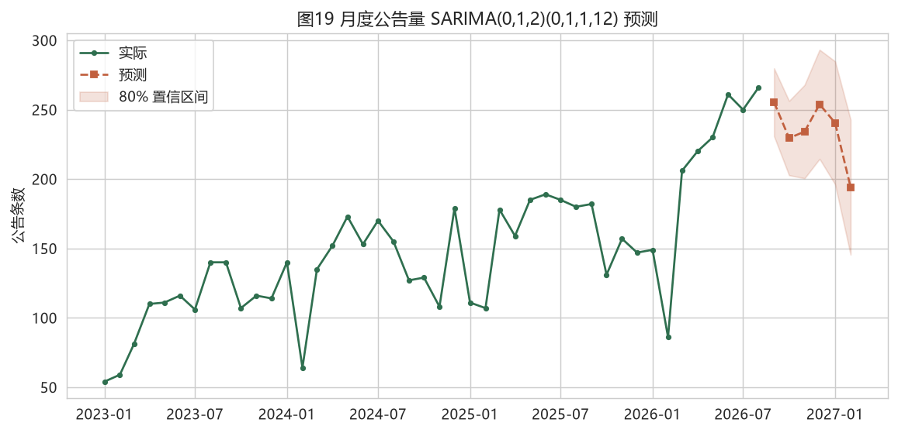
月度公告量 SARIMA 预测与外推 图 19 · 含 80% 置信区间 金额预测：六模型、拟合与残差 图 11a–11c · 金额回归
金额预测：六模型、拟合与残差 图 11a–11c · 金额回归
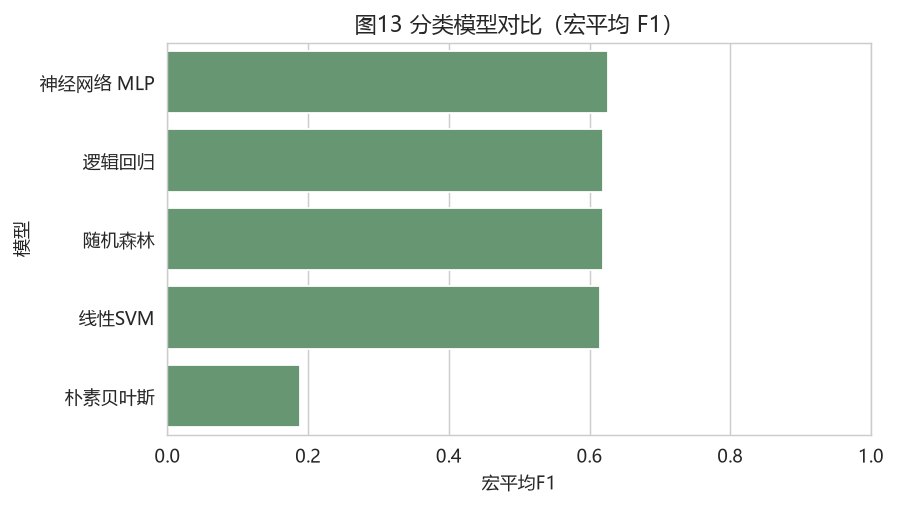
标的类型分类：五模型宏平均 F1 图 13 · 分类模型对比 高价值采购识别 ROC（金额 > 10 万元） 图 16 · 随机森林 AUC 0.913
高价值采购识别 ROC（金额 > 10 万元） 图 16 · 随机森林 AUC 0.913
影像截帧 6 张
看宣传片《最后的狼踪》95 秒宣传片：1920×1080 / 30fps / 无音轨。标题、说明文字和转场由 Pillow 逐帧画出来，再用 ffmpeg 编码；下面是从成片里抽的六帧。


图看完了，来看过程
图集只截了结果。这些图背后的采集管道、规则引擎和渲染脚本，在作品页和随笔里有完整版——包括没做完的部分。